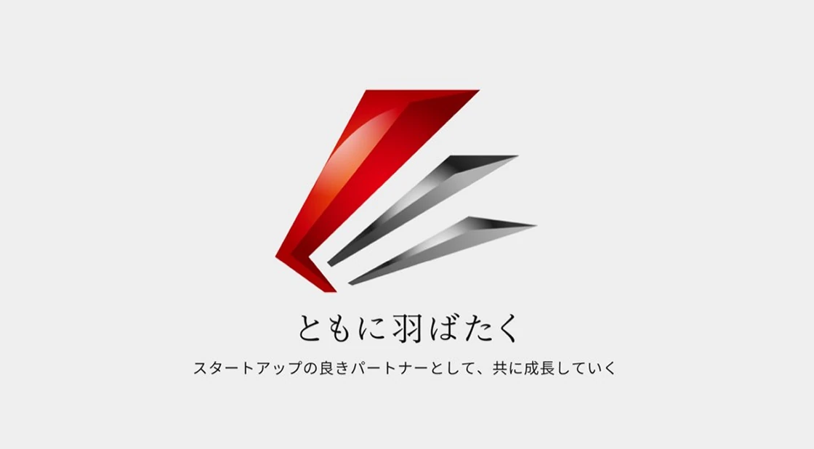

創業準備〜創業2年の経営者さまへ
創業期の税務・会計、
見落としは
ありませんか？
会社設立時の届出から、日々の経理・資金管理まで。
最大12問のセルフチェックで、今、確認したいことと次の一歩を整理します。
無料 / 約3分 / 登録なしで結果を確認 無料 / 約3分 / 登録なしで結果を確認
税務・会計を、経営の力に。
アセンドパートナーズ会計事務所
代表 鶴田 高志
アセンドパートナーズ会計事務所 代表 鶴田 高志
会社をつくる前も、つくった後も。
設立準備中 ／ 設立したばかり ／ 最初の決算に向けて設立準備中 ／ 設立したばかり
最初の決算に向けて
YOUR QUESTIONS
会社をつくったその先に、
こんな不安はありませんか？
「何から手をつければいい？」を、一緒に整理しましょう。
-
01
必要な届出、出せている？
会社は設立したけれど、税務手続きがすべて済んでいるか不安。
-
02
領収書の管理、このままでいい？
領収書や請求書の保存方法を、今のうちに整えておきたい。
-
03
税金や報酬、いつ決める？
役員報酬や消費税など、何をいつ判断すべきかわからない。
-
04
手元のお金、見えている？
売上は把握していても、実際に残るお金をつかめていない。
WHAT YOU GET
3分のチェックで、
次の一歩を、はっきりと。
-
01
見落としに気づく
創業期に確認したい税務・会計の重要項目を、ひと通り整理。
-
02
優先順位がわかる
今の状況に合わせて、先に確認したい事項を把握。
-
03
相談の準備ができる
結果をもとに、専門家に聞きたいことを具体化。
FOUR AREAS
創業期に大切な、4つの領域。
専門用語に詳しくなくても大丈夫。「わからない」も選べます。
-
01
設立・税務手続き
設立時の届出、青色申告、申告スケジュール
-
02
経理・資金管理
記帳、領収書・請求書、毎月の収支と現預金
-
03
税金・報酬
役員報酬、源泉徴収、消費税・インボイス
-
04
成長準備
資金調達の予定、資本政策、相談体制
YOUR NEXT ACTION
点数よりも、
「次に何をするか」。
優先して確認したいこと、準備できていること、次の行動をひとつの結果に。
- 1.優先して確認したい事項
- 2.すでに準備できている事項
- 3.具体的な確認アクション
01 優先して確認したい事項
02 すでに準備できている事項
03 具体的な確認アクション
会社の状況によって不要な項目は対象外に。
「該当なし」で評価を下げることはありません。
CHECK RESULT / 結果の一例
次に確認したいことが、
見えてきました。
-
優先確認
設立関連の届出
提出済みの書類と提出日を確認し、未確認の届出・期限を整理しましょう。
-
優先確認
消費税・インボイス
取引先や今後の事業予定を整理し、自社に必要な対応を確認しましょう。
-
準備できている
経理・資金管理
領収書・請求書の保存方法
毎月の収支・手元資金の把握
HOW IT WORKS
回答から結果まで、迷わず3ステップ。
-
STEP 01
最大12問に回答
1画面1問。今の状況に近い回答を選び、「次へ」で進みます。
-
STEP 02
その場で結果を確認
名前やメールアドレスの入力なしで、確認事項を読めます。
-
STEP 03
必要なら、税理士へ相談
希望する方だけ、結果のメール受取や30分無料相談へ。
WHY ASCEND PARTNERS WHY ASCEND PARTNERS
創業期の税務から、
その先の成長まで。
日々の経理から資金調達・資本政策まで。事業の状況に合わせて、経営者の意思決定を支えます。
-
01
税務・会計
届出・申告、月次管理の土台づくり
-
02
経理業務
日々のお金の流れを見える状態に
-
03
成長支援
資金調達・資本政策・SOの相談


FAQ
よくあるご質問
はい。最大12問のセルフチェックと、その場での結果確認は無料です。
ダミーテキストです。ここに回答文が入ります。正式な回答が決まり次第、この文章を差し替えてください。
ダミーテキストです。ここに回答文が入ります。正式な回答が決まり次第、この文章を差し替えてください。
ダミーテキストです。ここに回答文が入ります。正式な回答が決まり次第、この文章を差し替えてください。
ダミーテキストです。ここに回答文が入ります。正式な回答が決まり次第、この文章を差し替えてください。